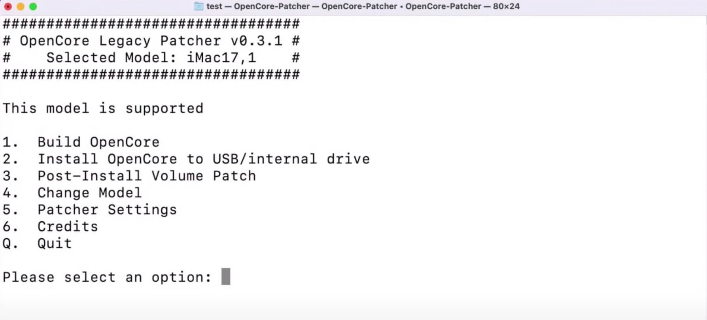
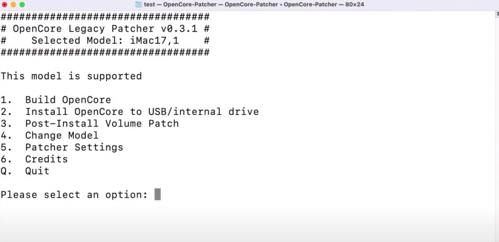
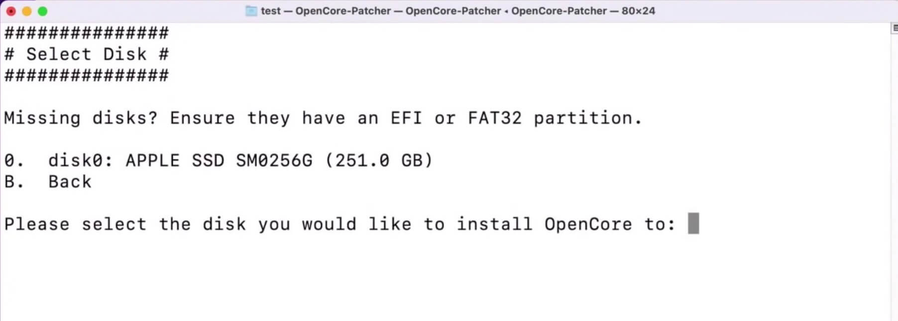

最新的 macOS 13 已经不支持 2015 款 MacBook Pro 了，通过此 patcher 可以顺利升级。步骤如下：
- 插入一个大一些的优盘作为系统升级盘，disk 工具格式化为 apfs日志式 + 分区表 guid
- opencore 中选择 create macos installer - download macos installer 在线一键下载最新版本系统镜像
- 下载好后按照提示写入到 u 盘中
- 选择 build and install opencore 写入到 u 盘分区中
- 重启选择 u 盘的 opencore 引导
- 进入 recover 后选择 install macos，会保留系统数据更新到新版系统
- 升级完成后进入系统，等一会儿回提示检测到 opencore 引导在 u 盘上，是否写入到硬盘，选择是，根据提示选择系统硬盘分区安装 opencore 即可，拔下 u 盘
- settings 里可以取消选择 show boot picker
今年发布的 macOS Monterey 增加了很多新功能，其中一个就是可以通过 AirPlay 将手机屏幕投放到 Mac 上。这个功能挺有意思的，但是当我把我的 MacBook Pro 升级系统后，发现无法使用这个功能，经过查询后发现这些新功能只对较新款的设备开放，这就有点让人吐槽了。
但是不放弃的我开始查询是否有大神给不支持的设备添加上这些功能，果然被我找到了，而且是一个挺有名的项目：OpenCore Legacy Patcher。
OpenCore Legacy Patcher 是一个旨在帮助不被苹果官方支持的老版本 Mac 升级到最新系统及特殊功能的项目。为这些老设备提供接近于原生的体验。
GitHub 地址：https://github.com/dortania/OpenCore-Legacy-Patcher/
我的是 2015 款 MacBook Pro，系统是支持直接升级到 Monterey 的，就是缺失了一些新功能，也可以使用这个工具来解锁这些限制。
下载安装
在 release 页面下载最新版，下载 TUI 即可也就是 terminal 版：
https://github.com/dortania/OpenCore-Legacy-Patcher/releases
下载解压后拖放到 application 文件夹即可完成安装。
配置
注意在操作前最好做一次 Time Machine 备份系统，以免操作失败后数据丢失。
打开OpenCore-Patcher 进入配置界面：
上面提示此设备并不在这个 patcher 列表中，因为它依然可以收到苹果官方的系统支持。但我们依然想利用这个 patcher 来解锁一些功能，所以首先我们需要允许 opencore 运行在此设备上。
选择 4. patcher settings 回车：
选择 8. allow opencore on native models 回车后输入 y 确认，修改后 8 选项变为 currently true：
输入 q 返回主菜单，可以看到显示当前设备已被支持：

如果你的设备本来就已经进入了 opencore 的支持列表，不需要 选中 native models。
下一步设置 opencore 的默认启动模式，默认情况下安装 opencore 后每次启动系统会自动跳入引导选择界面，用来选择正常启动还是通过 pathcer 启动。但是这样比较麻烦，一般情况下配置好后，我们希望自动进入 patcher 后的系统，所以我们将自动跳入引导选择界面功能关闭，这样后续依然可以通过启动时按住 option 键来进入引导选择。
主界面选择 5. patcher settings，然后选择 5. miscellaneous settings：
选择 1. set showpicker mode:
上面会提示此选项的含义，这里输入 n 关闭此功能：
输入 q 回到主界面。
下面我们需要将上面的配置的结果 bulid 到系统临时路径中，选择 1. bulid opencore，完成 build 后输入 enter 返回：
最后，就需要将刚才 build 的数据写入到 usb 或内部存储器中。
如果写入到 usb 中，如果需要系统加载那些隐藏功能，就需要插入写好数据的 usb 然后启动系统时按住 option 选择 opencore 引导系统。如果写入系统内部存储器，就无须外部设备了，可以做到正常启动自动加载 patcher。这里介绍直接安装到设备内部存储器。
主界面选择 2. install opencore to usb/internal drive:

输入 0 选择内部存储器：

在此输入 0 选择 EFI 分区：
确认后 opencore 就写入系统中。
等待完成写入后手动重启系统，启动时按住 option 键进入引导选择界面：
这里默认是选中系统默认引导的，如果需要后续每次启动都自动进入 opencore boot 引导的话，使用方向键选择到 opencore 图标的 boot 项，然后按住 control 键，此时引导下面会出现一个圆圈，鼠标点击此圆圈代表设置此选项为默认引导项：
选择 opencore boot 进入系统后，打开 system preference - sharing：
可以看到菜单中多了一个 AirPlay receiver，表明 AirPlay 功能已经成功启动，此时就可以测试手机的 screen mirror 能否监测到 Mac 了。
后续 OpenCore-Legacy-Patcher 如果有更新了，下载安装最新的 app 后再次通过以上同样的方法来更新补丁即可。
查看版本
通过命令可以查看当前安装的 opencore 和 opencore legacy patcher 的版本。
opencore 版本信息：
% nvram 4D1FDA02-38C7-4A6A-9CC6-4BCCA8B30102:opencore-version
4D1FDA02-38C7-4A6A-9CC6-4BCCA8B30102:opencore-version REL-073-2021-09-06返回的 REL-073-2021-09-06 表示 opencore 0.7.3 版，编译于 2021.09.06
opencore legacy patcher 版本信息：
% nvram 4D1FDA02-38C7-4A6A-9CC6-4BCCA8B30102:OCLP-Version
4D1FDA02-38C7-4A6A-9CC6-4BCCA8B30102:OCLP-Version 0.3.1%00返回值表示当前版本为 0.3.1
卸载
如果通过 USB 加载 opencore 那么只需要拔出 usb 即可删除 opencore。
如果安装到内部存储器中，卸载稍微麻烦些，具体参考：Uninstalling OpenCore
启动模式选择
- 开机按住 option 键进入 boot 引导选择界面，可以选择系统默认引导或者 opencore 引导
- 按住 ctrl 键可以设置默认引导
- 进入 opencore 引导后按住 spacebar 空格键可以显示 recovery 恢复系统引导选项
- 进入 opencore 引导后选到进入系统的选项然后按住 shift + enter 可以进入系统安全模式
参考链接
Airplay BLOCKED on Monterey? How to unlock it!
OpenCore Legacy Patcher
How to Boot Recovery through OpenCore Legacy Patcher
Black Screen on MacBookPro11,3 in macOS Monterey
没有评论